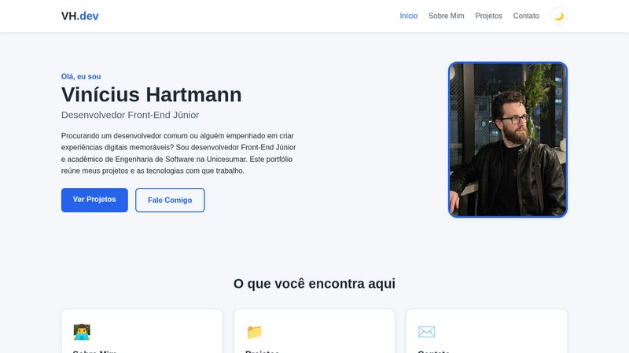
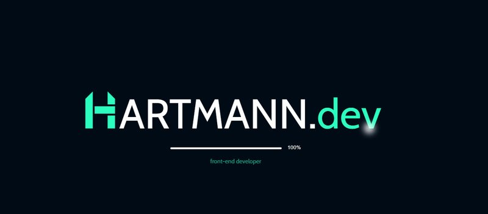
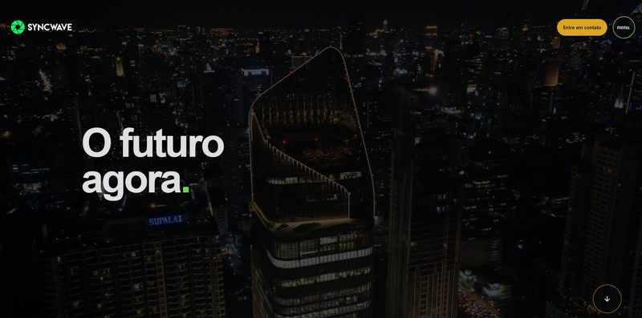
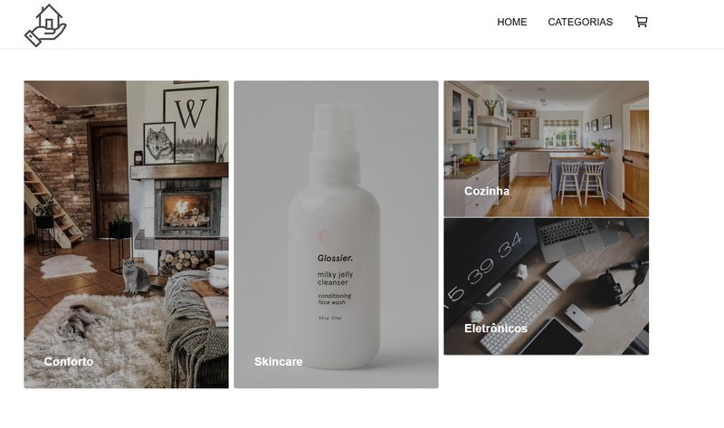
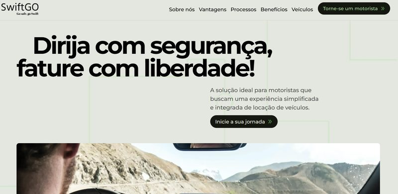

Portfólio Pessoal
Este próprio website: portfólio responsivo com 4 páginas, formulário com validação, modo escuro e menu adaptado para dispositivos móveis.
Código →Projetos reais que desenvolvi e mantenho publicados no meu GitHub, com as tecnologias utilizadas em cada um.

Este próprio website: portfólio responsivo com 4 páginas, formulário com validação, modo escuro e menu adaptado para dispositivos móveis.
Código →
Meu portfólio principal como desenvolvedor: uma aplicação em React com animações, tela de carregamento personalizada e seções de habilidades, projetos e contato.
Ver projeto →
Um site dedicado a criar soluções inovadoras e de alta qualidade, proporcionando experiências únicas e o melhor em branding para a indústria musical.
Código → Ver projeto →
Projeto de um e-commerce minimalista onde móveis, acessórios, produtos de skin care e eletrônicos de alta qualidade se unem para transformar sua casa e seu bem-estar.
Código → Ver projeto →
Landing page de um projeto para encontrar seu carro ideal e trabalhar como motorista de aplicativo, oferecendo automóveis confiáveis e acessíveis para garantir uma renda extra.
Código → Ver projeto →Jogo da forca interativo desenvolvido com React e TypeScript, utilizando o Vite. Trabalha componentização, estados e a tipagem estática do TypeScript.
Código →Aplicação em React com TypeScript que consome uma API de jogos, exibindo os dados de forma dinâmica na tela — um exercício prático de requisições HTTP e renderização de listas.
Código →